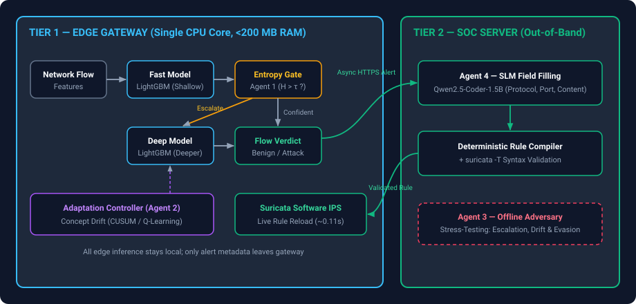

Deploying machine learning-based Network Intrusion Detection Systems (NIDS) directly on IoT edge gateways is very different from running detectors on cloud GPUs. Over the past year at the Data Governance Laboratory (PTIT) under Dr. Huy-Trung Nguyen, I co-authored Tiny-MARL (currently under minor revision) to explore how far we can push real-time detection and defense on a single-core, memory-constrained edge budget.
01. The Four Physical Bottlenecks at the Edge
- Strict Hardware Ceilings: Edge routers and field gateways cannot host multi-million parameter neural networks or frequent full retraining loops.
- Sub-Millisecond Latency: Inline packet/flow inspection must stay fast enough to avoid buffer overflows and packet drops.
- Concept Drift: Real IoT traffic shifts continuously as devices change operational modes or new attack families emerge.
- Slow Rule Response: A classifier that only raises alerts does not block traffic; manual firewall rule authoring leaves a window of exposure.

02. Entropy-Gated Routing & Drift Adaptation
Instead of running a single heavy model on every flow, we pair a shallow Fast-Path LightGBM model with a deeper classifier behind an entropy gate. Confident flows terminate immediately on the Fast Path, while ambiguous flows are escalated to the deeper model.
For handling temporal concept drift, one of our most interesting empirical takeaways was comparing a tabular Q-learning adaptation controller against classical statistical drift detectors (EWMA, CUSUM, ADWIN). In practice, a well-calibrated CUSUM trigger proved remarkably competitive—recovering accuracy reliably under drift while avoiding unnecessary CPU-heavy retraining.
03. Adversarial Pressure Beyond Accuracy
Most flow-based NIDS evaluations focus only on evasion (making an attack look benign). At the edge, however, an attacker can also target system resources:
- Forced Escalation: Perturbing packet timing, padding, or counts to inflate Fast-Path entropy and overload the deeper model.
- Spurious Retraining: Triggering covariate drift bursts without changing labels to waste gateway CPU on useless retraining cycles.
Working on these attack simulations made me realize how critical adversarial robustness is for AI-enabled security systems—and why I am eager to dive deeper into adversarial ML and real-world exploitation techniques.
04. Why Small Language Models Need a Deterministic Compiler
We also tested whether a compact local Small Language Model (Qwen2.5-Coder-1.5B) on an out-of-band SOC server could translate alerts into enforceable Suricata rules. Raw SLM outputs failed syntax validation in every single trial. By restricting the SLM to structured JSON field filling (protocol, port, content) and delegating rule assembly to a deterministic compiler + suricata -T check, we achieved reliable, non-blocking rule deployment without putting an LLM on the packet path.